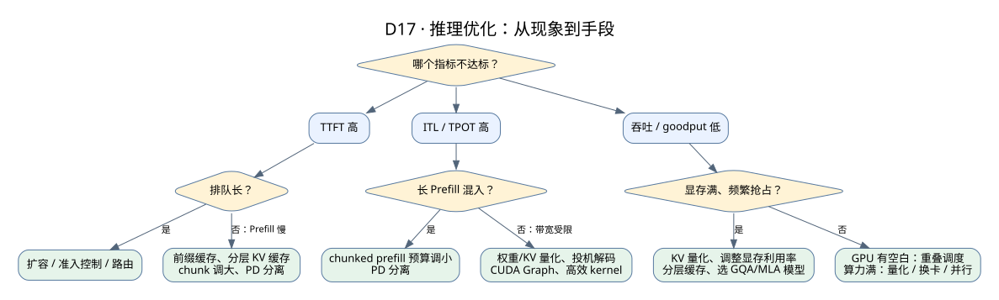

推理优化方法：从定位瓶颈到选择手段
Serving 与性能 · GPU 与 kernel 基础 · vLLM 性能与分布式 · 万卡集群的挑战
优化推理不是把所有开关都打开，而是先找到瓶颈，再选能解决这个瓶颈、代价可以接受的手段，最后用同样的负载验证。这一页按“目标 → 定位 → 手段 → 代价 → 验证”整理常见的优化方法。
1. 先确定优化什么
| 目标 | 看什么指标 | 通常的主要矛盾 |
|---|---|---|
| 首字更快 | TTFT（P50/P99） | 排队、Prefill 计算、远端加载 |
| 输出更流畅 | ITL / TPOT（P99） | Decode 的带宽、batch 中混入的长 Prefill、抢占 |
| 同样机器服务更多请求 | 满足 SLO 的 goodput | KV 显存容量、batch 大小、调度 |
| 更省钱 | 每百万 token 成本 | GPU 利用率、硬件选型、量化 |
这几个目标经常互相冲突：batch 越大吞吐越高，但 ITL 越差；chunk 越大 TTFT 越好，但混在一起的 Decode 会变慢。优化前先和业务确定 SLO。
2. 定位瓶颈

- 按阶段拆时间：排队、查找/加载缓存、Prefill、每步 Decode。先找占比最大的阶段。
- 看 GPU 时间线（Nsight Systems / torch.profiler）：GPU 有大段空白 → CPU 调度或数据准备是瓶颈；kernel 连续但慢 → 看是带宽还是算力受限。
- 看显存：KV 块使用率长期接近 100%、频繁抢占 → 容量是瓶颈。
- 看负载：输入输出长度分布、前缀共享率、到达是否突发。同一个优化在不同负载下结论可能相反。
3. 优化手段全景
| 层次 | 手段 | 解决什么 | 代价与前提 |
|---|---|---|---|
| 请求与缓存 | 前缀缓存（APC / RadixCache） | 重复前缀不再算，TTFT 和算力都下降 | 需要真实的前缀重复；模板要稳定 |
| 分层 / 共享 KV 缓存（LMCache、HiCache、Mooncake） | GPU 放不下的前缀也能复用，跨实例共享 | 加载要比重算快；带来网络和内存成本，见盈亏计算器 | |
| 缓存感知路由 | 把请求发到已有前缀的实例 | 可能造成热点，要和负载均衡折中 | |
| 调度 | 连续批处理 + chunked prefill | 提高 GPU 利用率，Decode 不被长 Prefill 卡住 | token 预算要调；见动态演示 |
| 重叠调度 / 异步调度 | CPU 准备下一轮和 GPU 计算并行 | 实现复杂；输出要延后一轮处理 | |
| 优先级与准入控制 | 保护高优先级请求的 SLO，避免过载雪崩 | 低优先级请求等待变长或被拒绝 | |
| 显存 | KV 量化（FP8 等） | KV 容量翻倍，Decode 读的字节减半 | 需要评估精度；格式要进缓存身份 |
| 选用 GQA / MLA 等结构的模型 | 每 token KV 小很多 | 属于模型选择，不是部署开关；见复杂模型 | |
| 调高显存利用率、合理设置最大长度 | 更多空间给 KV | 过高容易 OOM；最大长度设太大浪费预分配 | |
| 计算 | 权重量化（FP8、INT4/AWQ/GPTQ） | 权重更小，Decode 更快，可用更少的卡 | 精度损失；不同硬件支持不同；需要评测 |
| 高效 attention kernel（FlashAttention、FlashInfer 等） | 减少显存读写 | 需要匹配的硬件和 KV 布局 | |
| CUDA Graph、torch.compile、算子融合 | 减少小 kernel 启动开销 | 形状要固定或分桶；编译时间和显存 | |
| 投机解码（draft 模型、EAGLE、MTP 等） | 一次前向确认多个 token，降低 ITL | 接受率低时反而更慢；高并发时收益下降 | |
| 并行与部署 | TP / PP / DP / EP 组合 | 放下大模型，按瓶颈扩展 | TP 跨机通信很贵；EP 有 all-to-all 和负载不均 |
| PD 分离 | Prefill 和 Decode 分开扩缩容、互不干扰 | 需要 KV 传输；小规模时不一定划算 | |
| 硬件选型 | Decode 重的负载选带宽高的卡，Prefill 重的选算力高的卡 | 要按实际负载算每 token 成本 |
4. 三个需要算账的优化
4.1 投机解码什么时候划算
草稿模型一次猜 k 个 token，目标模型一次前向验证。若每个猜测被接受的概率是 α（假设相互独立），一次验证平均能产出的 token 数为：
期望产出 = (1 − α^(k+1)) / (1 − α)
α = 0.8，k = 4：(1 − 0.8^5) / 0.2 ≈ 3.36 个 token
α = 0.5，k = 4：(1 − 0.5^5) / 0.5 ≈ 1.94 个 token还要扣掉草稿模型的开销和验证多个位置的额外计算。低并发、Decode 受带宽限制时收益明显；高并发时 GPU 已经忙起来，额外计算会挤占其他请求，收益缩小甚至变负。
4.2 KV 量化能多放多少请求
示例模型 BF16：每 token 128 KiB；可用 KV 显存 40 GiB
BF16：40 GiB ÷ 128 KiB = 327,680 个 token ≈ 40 个 8K 请求
FP8： 40 GiB ÷ 64 KiB = 655,360 个 token ≈ 80 个 8K 请求能同时运行的请求翻倍，Decode 的 batch 更大、吞吐更高；但前提是精度评测通过，并且 kernel 对 FP8 KV 有高效支持。
4.3 PD 分离什么时候值得
当长 Prefill 频繁打断 Decode、导致 ITL 的 P99 不达标，或者 Prefill 和 Decode 需要的机器数比例差别很大时，PD 分离才值得。代价是每个请求的 KV 要传一次：8K 上下文 1 GiB，走 400G 网卡约 22 ms（理想值）。小规模部署、短输入时，用 chunked prefill 往往就够了。
5. 优化的验证方法
- 固定模型、版本、硬件和请求 trace，一次只改一个变量。
- 同时报告延迟分布（P50/P99）、吞吐、goodput 和输出质量。
- 在不同负载下各测一次（低并发、高并发、长输入、短输入），写清楚优化在哪些条件下有效。
- 做退化测试：缓存全冷、突发流量、节点故障时，优化会不会让情况更糟。
测量步骤和公开参考数据见实测与故障演练。